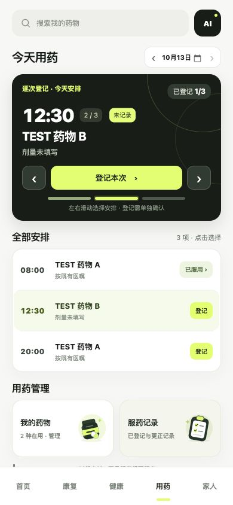
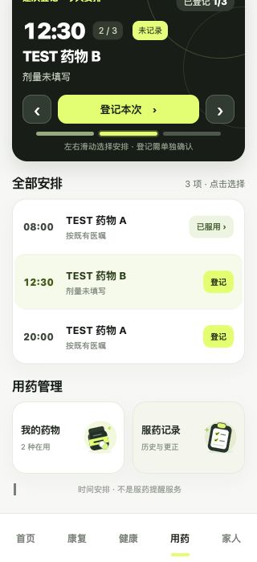
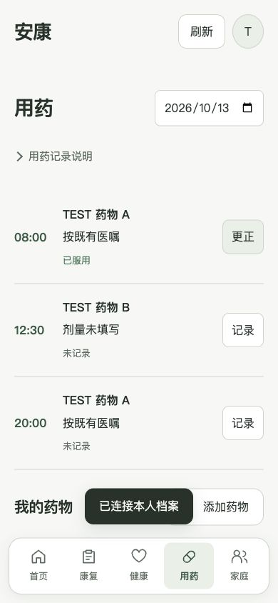
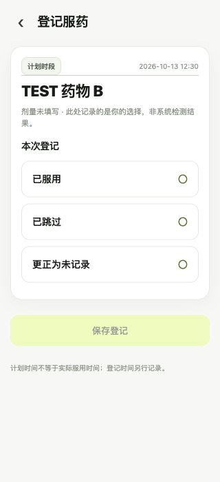
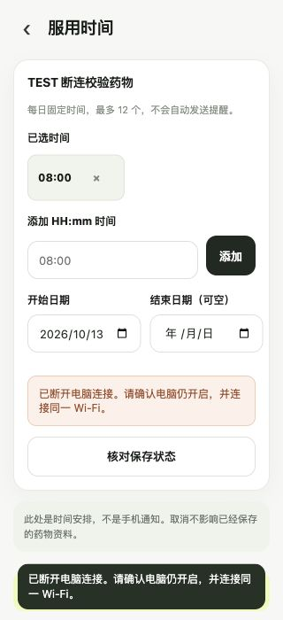

用药 V1.2.1 正式集成对照
正式页使用真实 TEST 接口数据。批准PNG和同浏览器HTML原型单列，不属于正式产品数据。实际使用 Codex 内置浏览器，未完成独立 Chromium 验收。
验收报告 · 完整截图索引 · 原批准HTML（演示）
390：批准/同浏览器/正式
references/用药首页_390x844.pngreferences/prototype-browser-390.jpgscreenshots/final-medication-390.jpg
320：批准/同浏览器/正式
320管理卡：批准/正式
references/320px下滑查看管理卡片.pngscreenshots/management-svg-320.jpg
旧页/新版390
screenshots/before-medication-390.jpg
screenshots/final-medication-390.jpg真实登记/断连/更正
screenshots/register-unselected-320.jpg
screenshots/time-save-disconnected-320.jpg
screenshots/changed-stopped-history-320.jpg